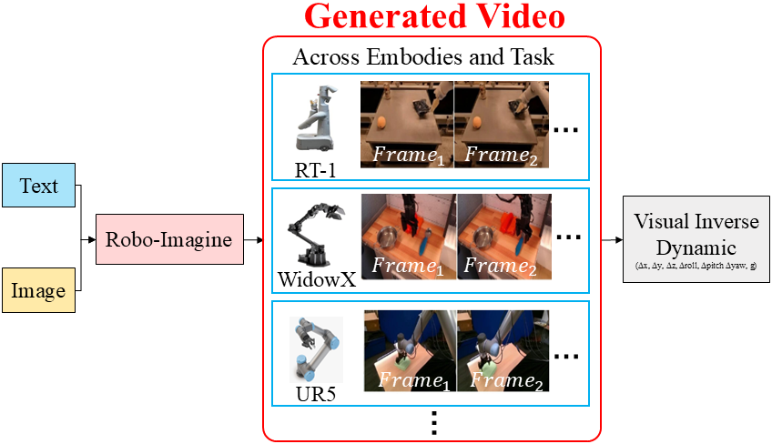
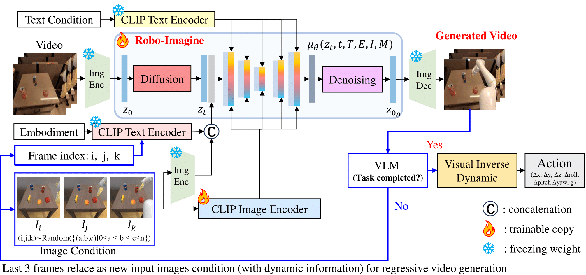
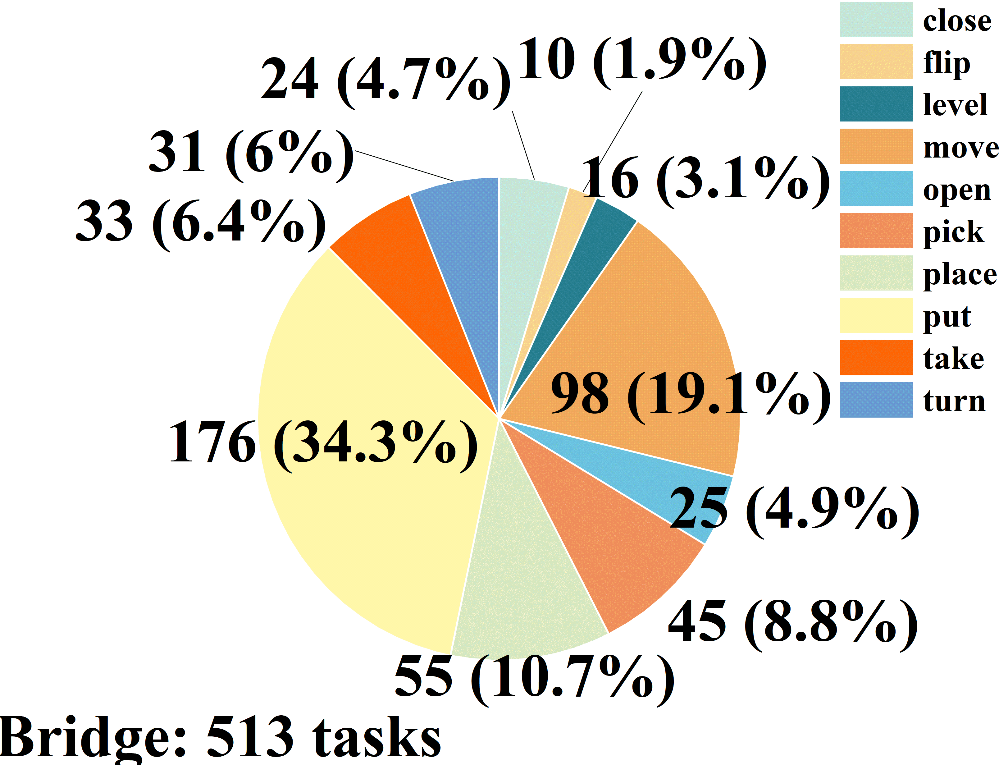
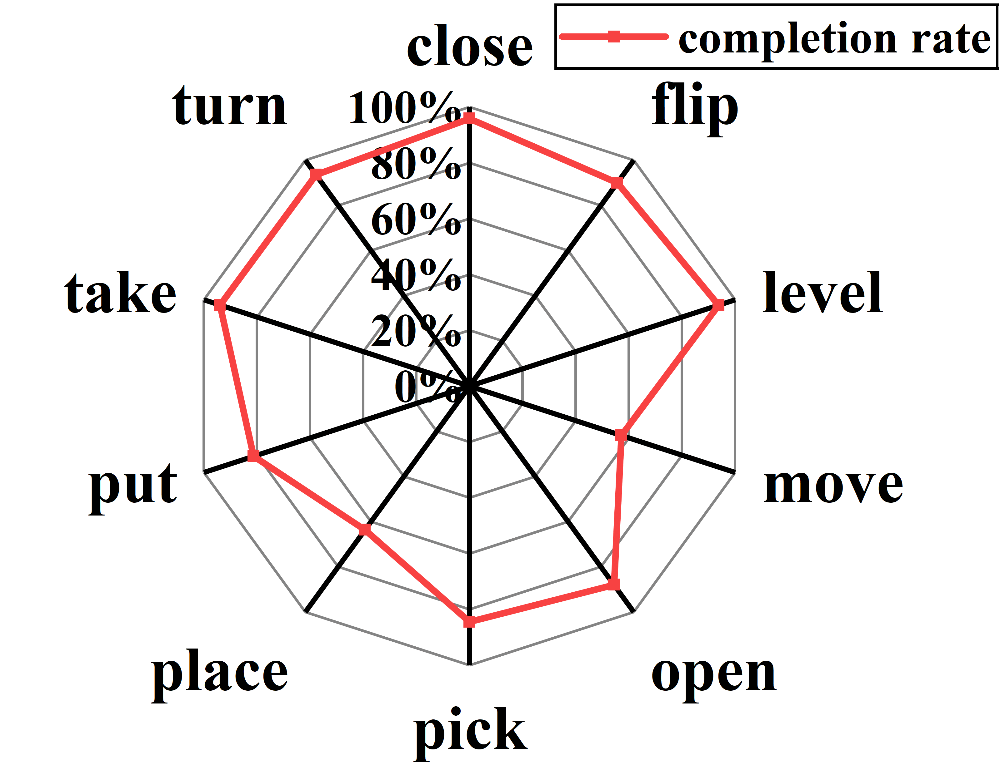
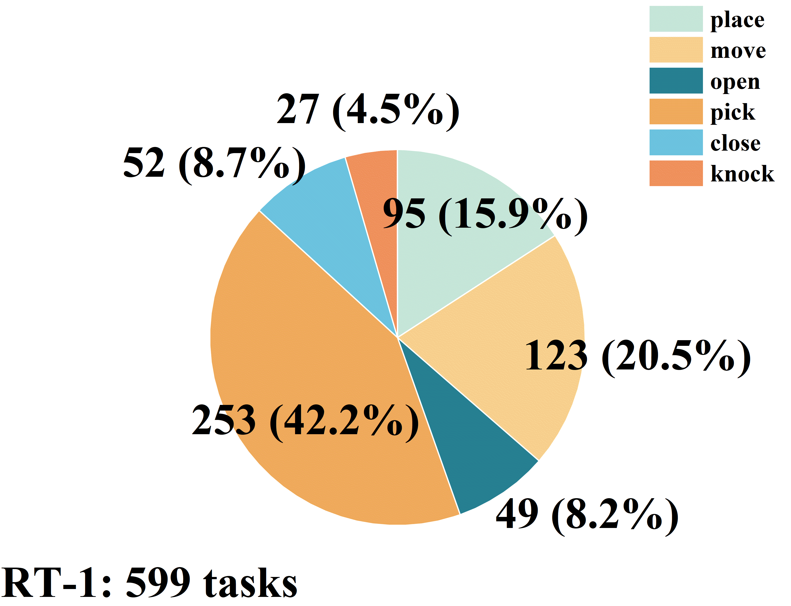
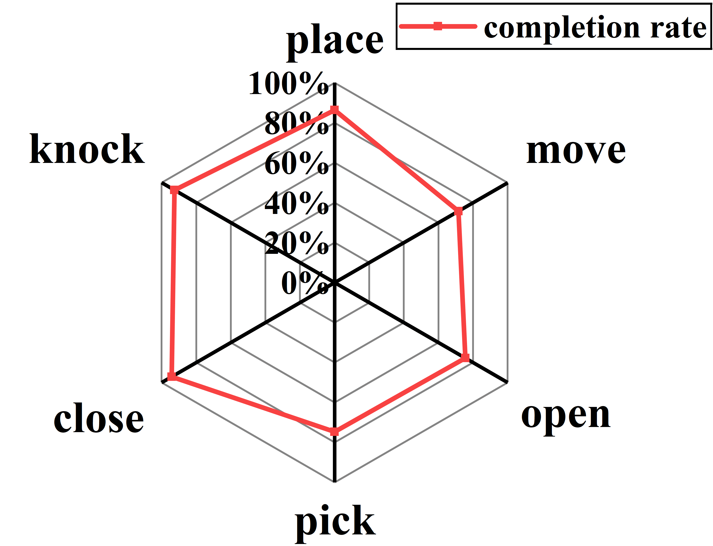

Paper

Robot learning aims to control robots to complete tasks across diverse physical embodiments and environments. Mainstream approaches tend to train an end-to-end robot model trained on image-text-encoding of states, which achieve good task-specific performances, but struggle on unseen scenes and tasks. Recently, video generation models provide a new perspective to enable robots to generalize by using videos as an 'imagination' of future actions. However, the current approach trains a video model on a specific embodiment and specific task, showing poor generalization. In this paper, we train a generalized robotic video generation model, named Robo-Imagine, conditioned with image and text, to generate visual-semantic-conformity robotic manipulation videos across variant embodiments, backgrounds and tasks. Our method able to effectively generalize and generate robotic videos on unseen cases, even enabling us to transfer a model trained on real-world video and directly solve tasks in simulation environment. We enable generating longer videos by applying this model autoregressively using a VLM as task-completion evaluator.Furthermore, we train a visual inverse dynamic model to map the generated videos into end-effector actions. We illustrate that the efficiency of our approach across embodiments and environments and plan to open-source our model on paper acceptance.

Robo-image is an image-text conditioned, generalized robotic video generation model across different embodiments and tasks.

Robot-Imagine is a U-Net-based diffusion video generation model, with text instruction and initial image as inputs and outputs generated robotic manipulation videos. We employ a VLM as task-completion evaluator to generate long-content video. If VLM feedbacks that task is deemed incomplete, the model continues generating video until the task is fulfilled. Then the visual inverse dynamic model map the generated guiding video into robot arm 7-DoF actions for task in simulation or real world.
We evaluate our model on the RT-1 dataset, which contains 599 robotic manipulation videos with different embodiments and tasks.
pick rxbar chocolate
close top drawer
knock water bottle over
move sponge near apple
open middle drawer
place green rice chip bag into top drawer
move 7up can near orange can
move sponge near pepsi can
pick water bottle from middle shelf of fridge
place green jalapeno chip bag into bottom drawer
We evaluate our model on the Bridge dataset, which contains 513 robotic manipulation videos with different embodiments and tasks.
close fridge
flip pot upright in sink (distractors)
open microwave
put knife on cutting board
take sushi off plate
move yellow cloth to left of fork
pick up mushroom and put it inside of the pot
place the vessel near banana
put lid on stove
take the sushi out of the pot and move it to the back left corner




The experimental results for the Robo-Imagine model are summarized as follows: Figure (a) illustrates the distribution of 599 tasks across six primary categories in the RT-1 test dataset, while Figure (b) presents the success rates of these six categories. Figure (c) shows the distribution of 513 tasks across ten primary categories in the Bridge test dataset, and Figure (d) depicts the success rates of these ten categories. These results are used to assess the generalization ability of the Robo-Imagine model across different datasets and task types.
In our model, the Vision-Language Model (VLM) serves as a task-completion evaluator, enhancing the quality of generated videos by ensuring alignment with task requirements over extended temporal horizons. Comparative results between the VLM and No-VLM configurations demonstrate that incorporating the VLM module significantly improves video generation quality, providing greater adherence to task goals than models without the VLM module.
No-VLM
place the blue cup over the black cup
place the cloth from the red bowl in the grey bowl
move the cloth on the table
pick up the bottle and put it in the pot
Contains VLM
To test the model's generalization capability furthermore, we created four distinct scenarios in the simulation environment. These scenarios varied in backgrounds, desktop categories, desktop texture, random coke can poses and spacial configurations. As video shown, in each case, the robot successfully completed the assigned tasks, pick up coke can stably, further affirming the model's adaptability and robustness.
Our model was subsequently deployed on robotic arms, where corresponding experiments were conducted in real-world settings. These trials yielded performance outcomes that closely matched expectations, providing strong validation for the model's practical applicability. The video results highlight the model's capacity for effective transferability across different real-world scenarios, underscoring its versatility and robustness in practical applications.
move orange near apple
move carrot to drying rack
pick orange
put orange on plate
pick apple
Real experimental results demonstrate that the Robo-Imagine model exhibits remarkable generalization capabilities in real-world applications. Under diverse scenarios, across different robotic arms, and with varying task instructions, the model consistently performs tasks effectively, showcasing its robust adaptability across environments and embodiments.